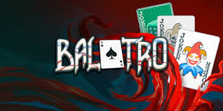

Balatro
El roguelike de póker. Balatro es un hipnótico y genial constructor de mazos donde podrás jugar manos ilegales de póker, descubrir comodines que alterarán tus partidas y activar combos impresionantes que dispararán tu adrenalina.
Sitio oficial